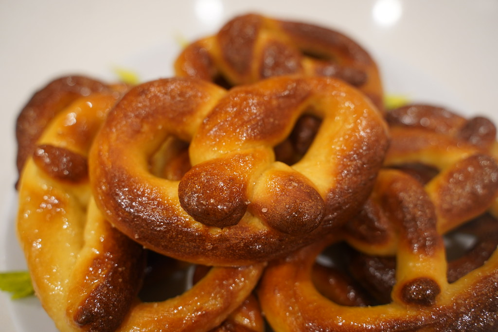

Pretzel Recipe

Description
Pretzels are not the easiest thing to make, so I asked a baker friend of mine for tips.
This recipe is simple enough that even I made it successfully, you won't even need a mixer.
You will need to set aside 2 1/2 hours, and be prepared to knead for 8-12 minutes! Makes 8 pretzels.
Ingredients
- 340 mls water
- 1 tablespoon salt
- 1 tablespoon sugar
- 7g active dry yeast
- 4 1/2 cups of plain flour
- 3 tablespoons of oil
- 2/3 cup baking soda
- 2 eggs, beaten for egg wash
- coarse salt for presentation
Steps
- In a bowl mix water, salt and sugar until combined. Add yeast and let mixture rest 5 minutes until yeast starts to form
- Add flour and two tablespoons of oil, mix thoroughly until dough forms
- Remove dough and use the remaining oil to coat the inside of the bowl
- Cover bowl with plastic wrap, and leave in warm place for 1 hour e.g. you could leave it in a larger bowl filled with warm water
- Preheat oven to 230C
- Cut dough into 8 pieces, roll into balls and let rest for 10 minutes
- Roll pieces into ropes, and then shape them into pretzels
- Add baking soda to a large pot of water, bring to rolling boil. Boil each pretzel for 30 seconds per side
- Transfer pretzels to a baking sheet, brush with egg wash, and sprinkle with salt
- Bake for 10-15 minutes, until golden brown